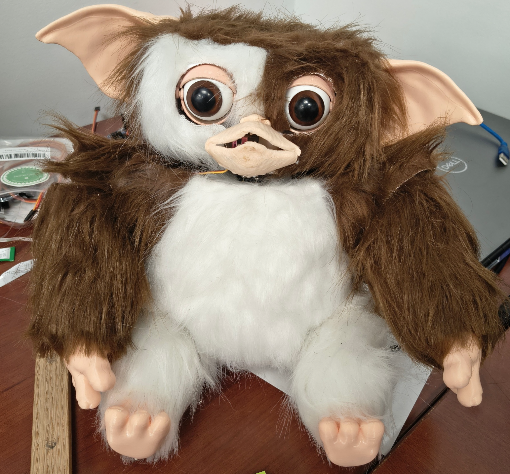
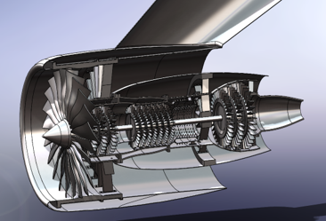
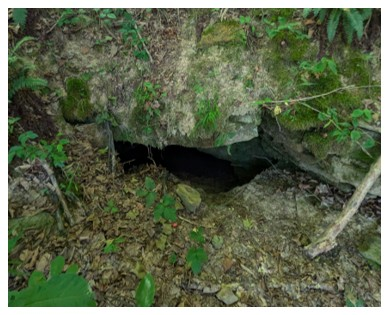
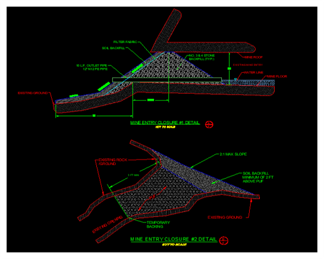
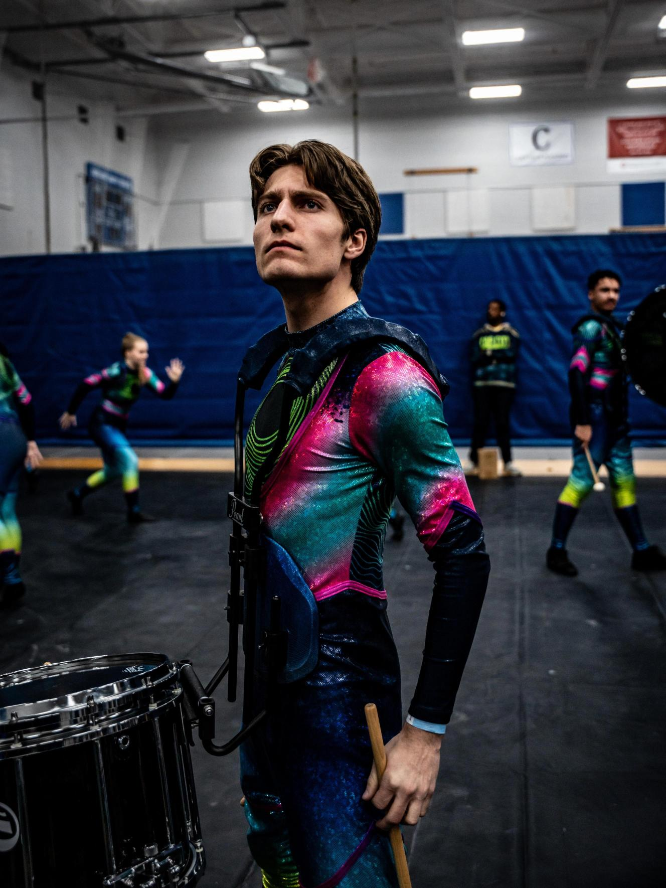

Nathaniel Weidner
Mechanical Engineering senior at Ohio University with hands-on experience in CAD, mechanical systems, engineering analysis, prototyping, and requirements-driven product development.
I enjoy taking ideas from early requirements and concepts through design, fabrication, and testing, with particular interests in aerospace and manufacturing.
Featured Projects
Projects that best represent my experience in mechanical design, product development, and engineering analysis.

Project Bastion
Designed and built a machine-guarding system for a torsion-testing machine, taking the project from requirements and CAD through engineering analysis, manufacturing, assembly, and final validation.

Animatronic Systems
Two animatronic projects that took me from assembling and troubleshooting an existing system to leading the mechanical development of an original design through CAD, prototyping, and integration.

High-Bypass Turbofan
Developed the complete final CAD model and assemblies for a simplified high-bypass turbofan and used structural, fatigue, and flow analyses to evaluate and improve selected components.
Additional Work
Senior Design 2026–2027
Modular Deployable Rocket Payload
My current senior design project with the Ohio University Rocket Club, focused on developing a rocket and modular deployable payload system. The project is currently in the early requirements and ideation stages.


Abandoned Mine Land Engineering
Supported abandoned-mine reclamation work through field investigations, AutoCAD plan development, site data, and engineering documentation, including early design work for closure of hazardous mine openings.
Engineering Beyond the Classroom
I’m drawn to engineering work where I can understand a problem, develop a design, and eventually see that design become something real.
My experiences have taken me from professional product development and animatronic mechanisms to aerospace modeling, field engineering, and senior design.
Outside engineering, marching percussion has been a major part of my life and has shaped how I approach teamwork, leadership, preparation, and continuous improvement.

Let’s Connect
I’m currently preparing for entry-level mechanical design, product development, and related mechanical engineering opportunities beginning in 2027.